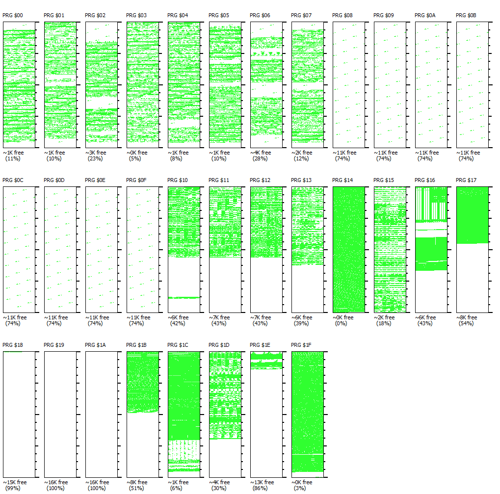

Mark of the Beast
I am the sole engineer working on Todd Broadwater's Mark of the Beast NES Game! I am actively fixing bugs, polishing the game, and adding functionality before its full release. As game development moves forward, I will be updating this page with more content and videos! Mark of the Beast uses NESMaker 4.1.5
Movement Bugs
Still learning NESMaker as an editor, but it was fun getting to work with the input scripts to fix some crouching while sliding bugs! I had to check for crouching state in the StartMovingRight, StartMovingLeft, and StartCrouch scripts. I also made edits to the Player Game Object action steps.
Oh No! No More Space :(
Alright - so as I was making more changes to the game engine logic (since upgrading isn't an option right now), I ran into storage issues in Bank 14. A lot of the logic for movement, core behavior, etc is in Bank 14. Thanks to the knowledge of people way better at Assembly than me, I was able to implement on demand bank switching! Using the method @chronicleroflegends provided, we can store all our "Bank Boomerangs" into a collected library of them where each subroutine will load Bank 18 for more space, call your custom logic, and then return back to Bank 14.
Each subroutine does the bank loading and un-loading logic, so I can see a future improvement where this logic only happens once somehow (but I don't know 6502 Assembly like that so let me know). My understanding from what I've been reading online is that these space issues are less of a problem in future engine iterations.

With the power of bank boomeranging, we can venture forth with more custom script changes!
Textbox Helpers
I had to implement custom logic to switch the player to their IDLE state when the textbox activates. It also prevents any input so you can't interrupt the NPCs. Potential improvements include: allowing NPC text interruption, preventing movement when the text is completed, kicking you out of crouching to stand idle.